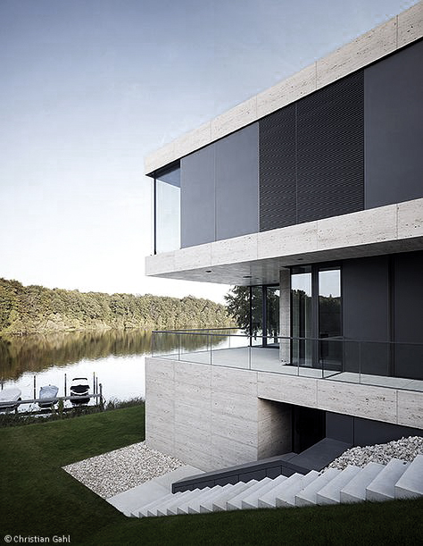
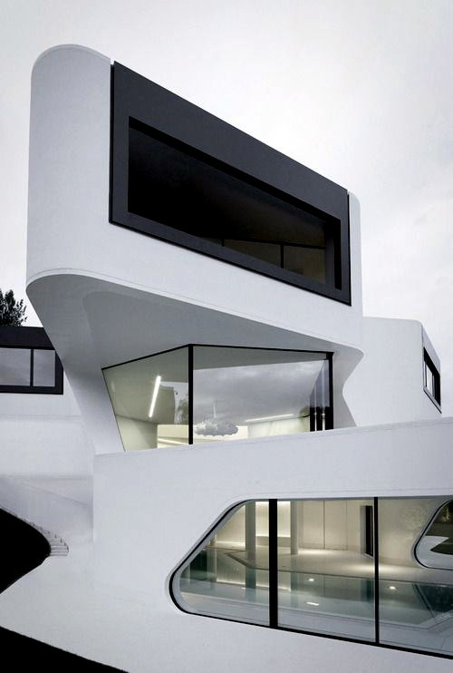
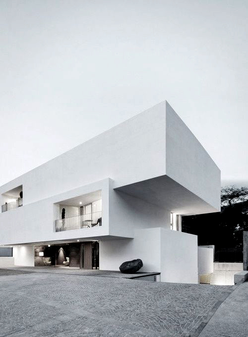
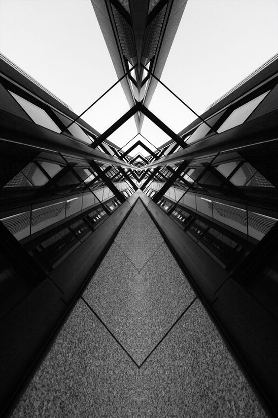
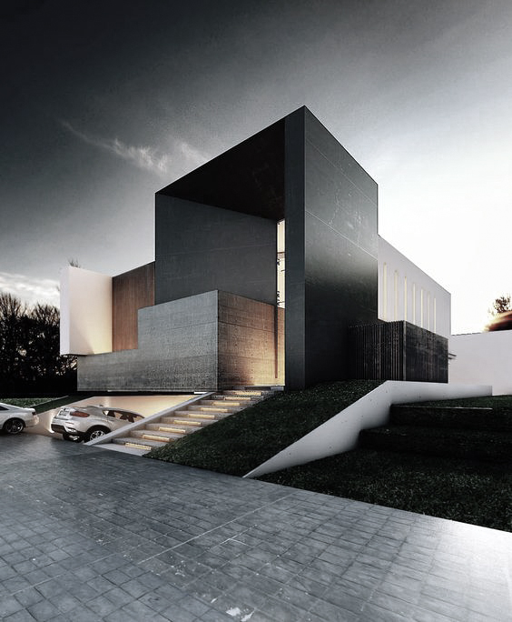

Modern architecture has something for everyone. Even if your taste may veer towards the opposite side of the design spectrum (i.e. rustic country)— there are still elements of modern design that will appeal to you. Don’t believe it? After reading this article, you may change your mind.

By 1920 there was an increasingly wide understanding that building forms must be determined by their functions and materials if they were to achieve intrinsic significance or beauty in contemporary terms, without resorting to traditional ornament. Instead of viewing a building as a heavy mass made of ponderous materials, the leading innovators of modern architecture considered it as a volume of space enclosed by light, thin curtain walls and resting on slender piers. The visual aesthetic of modern architecture was largely inspired by the machine and by abstract painting and sculpture.

Modernism first emerged in the early twentieth century, and by the 1920s, the prominent figures of the movement – Le Corbusier, Walter Gropius, and Ludwig Mies van der Rohe - had established their reputations. However it was not until after the Second World War that it gained mass popularity, after modernist planning was implemented as a solution to the previous failure of architecture and design to meet basic social needs. During the 1930s as much as 15% of the urban populations were living in poverty, and slum clearance was one of the many social problems of this decade.[1] Modernist planning was a popular idea, and used as a solution to these problems.

Since the mid-19th century there had been repeated attempts to assimilate modern technology in practice and theory and to formulate a modern style of architecture suitable to its age. A functionalist approach eventually replaced the formerly eclectic approach to design.
Wood
Steel
Concrete
Marble
Stone

Modern architecture, new architectural style that emerged in many Western countries in the decade after World War I. It was based on the "rational" use of modern materials, the principles of functionalist planning, and the rejection of historical precedent and ornament. This style has been generally designated as modern, although the labels International style, Neue Sachlichkeit, and functionalism have also been used.

As a result of these advances, the formal conception of architecture was also undergoing a profound transformation. Frank Lloyd Wright, a pupil of Sullivan, experimented with the interpenetration of interior and exterior spaces in his residential designs. In Holland, where Wright's work was widely admired, the architects of de Stijl sought to organize building elements into new combinations of overlapping and hovering rectangular planes.